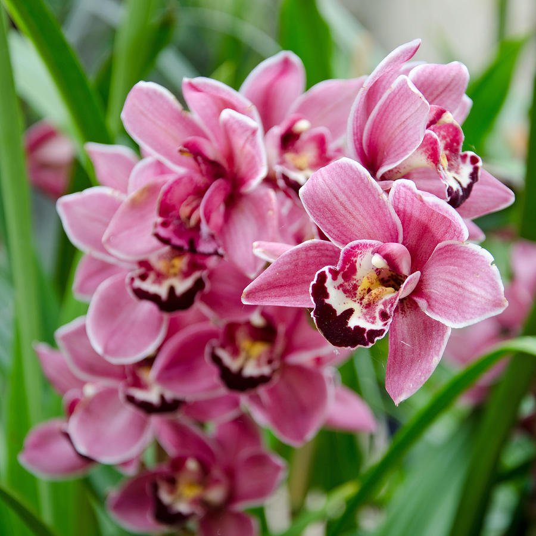

ORCHID CARE INSTRUCTIONS
The golden rule for orchid care indoors is to duplicate the plant's natural conditions as closely as possible. In nature, most orchids are epiphytes, meaning they grow on other objects, clinging to rough bark or even stone. And their roots are water-gathering organs that need fresh airflow to remain healthy. When you first obtain your orchid, it will likely be healthy and in bloom. However, many store-bought orchids are potted in the wrong conditions for long-term growth. They are usually sitting in plastic containers and packed tightly with moss around the roots, which can result in too much retained moisture and consequently root rot.1 But even if the container isn't ideal, never repot an orchid while it's in bloom. Instead of repotting, it's better to back off on watering. Then, orchid care after flowering involves shifting your thinking to long-term maintenance. Most growers snip off the old flower spike near the base. (Some retain the spike hoping for a rebloom, which occasionally does happen.) Also after the orchid blooms fall off, you can repot your plant into a more suitable container with the right growing medium.
Light
Orchids need bright light to produce blooms. However, direct sun can burn them. Opt for bright, indirect light such as that from a south- or east-facing window.
Soil
Orchids do not grow in regular potting soil or potting mix. Instead, you can purchase or make your own orchid growing medium, which should be light and fast-draining. Common mixes include bark, sphagnum moss, perlite, and peat. A slightly acidic pH is ideal.
Water
Orchids need to dry out between waterings to prevent rot. One way to tell whether it’s time to water is if the growing medium feels dry to the touch and the pot feels light. Or look at the roots themselves. If they’re plump and white or green, that means they’re well-watered. If they’re shriveled and gray, they need water. And if they’re shriveled but spongey and black or brown, they could be rotting.
You’ll typically need to water twice a week in the warmer months when the plant is actively growing and only once a week in the colder months. Use room-temperature water, and water slowly until it flows out of the pot.
Temperature and Humidity
Depending on how they're classified, orchids do best in ranges in between 50 degrees and 90 degrees Fahrenheit. And they prefer humidity levels from around 40% to 70%.
You can keep your orchid blooming longer if you provide a sufficiently warm and somewhat humid environment. Don't place your orchid where it will experience cold drafts or exposure to direct sunlight or heating vents. Dry air, direct heat, and chills are enemies of these delicate flowers.
Pruning
Proper pruning of old wood will make way for new blooms. However, different orchids require different pruning methods. When pruning an orchid, make sure your tool is sharp and sterilized. A clean cut will help to keep an orchid healthy.
In general, remove faded orchid blooms to keep the plant from spending energy on old growth. After flowering is complete, you typically can cut off the flower spike. However, certain orchid varieties are known to rebloom on the same spike. In that case, you can remove the faded blooms but not the spike.
Propagating Orchids
Propagating orchids by seed is notoriously difficult because the minuscule seeds need extremely specific conditions that are hard to duplicate. The most common way to propagate an orchid is by division. If you already have a somewhat mature or large orchid and you'd like to divide it into two stand-alone plants, take these steps:
- Moisten the growing medium to make it easier to remove the plant from the container.
- Examine the roots of the orchid, and remove damaged or dead parts that appear black, mushy, or paper thin. Healthy roots are firm and plump.
- Try teasing apart some of the roots and stems. If they can't tease apart by hand, use a sharp, sterile cutting tool.
- Repot each plant in new medium, stake if necessary, and water.
Potting and Repotting Orchids
If your orchid's roots are growing out of the pot and/or the growing medium has completely broken down, it’s time to repot. Wait until you're sure your plant is done flowering before repotting your orchid. Here's how:
- Gently remove the orchid from its old container, moistening the growing medium as necessary to make it easier to slide the plant out.
- Cut away any dead or damaged roots with a sterile cutting tool.
- Set the orchid in a slightly larger container, and fill around it with fresh growing medium.
- Because the roots won't be anchored to the medium yet, you can stake the plant if necessary to help it stay upright. Eventually, new roots will grow through the medium and attach to the pot itself, which will anchor your plant.
Common Pests & Plant Diseases
Orchids don't tend to have major pest problems. But they can be appetizing for common plant pests, including aphids, fungus gnats, mealybugs, spider mites, scale, cigar-shaped thrips, and whiteflies.2 Most pests can be eliminated with a gentle brush of the hand, a jet of water, or washing with soapy water to reduce the insect populations. You can also dab rubbing alcohol or mix alcohol with a few drops of liquid dish soap and then gently spray the insects as a way to damage their bodies. Another solution for insect removal is neem oil, which can smother pests.
Furthermore, besides root rot, orchids also can become afflicted with various fungal diseases, such as anthracnose, phytophthora (black spots on leaves), botrytis, leaf algae, and petal blight.
How to Get Orchids to Bloom
Your orchid should bloom at least once a year if not more, though species vary in blooming cycles. And the flowers generally last two to four months on average
It can be disheartening to see a flowerless orchid that once beautifully bloomed. Some orchids can be stimulated to bloom if the temperature goes down for a few nights, such as the phalaenopsis orchid, which is luckily one of the most popular plants sold as houseplants. But otherwise, ensuring a bloom from your orchid is generally all about providing the proper light, moisture, temperature, humidity, food, and growing medium.
Common Problems With Orchids
Once an orchid finds a suitable spot and falls into a routine, the plant should produce healthy growth and eventually reward you with a beautiful bloom. But subpar conditions can result in some common problems.
Leaves Shriveled and Wrinkled
Shriveled and wrinkled leaves indicate that the orchid is not getting enough water. The culprit is often unhealthy roots. Roots should appear plump and white or green. If the roots appear healthy, that likely means the plant is being underwatered. But if roots are black and mushy, use a sterile cutting tool to eliminate the bad roots, and repot the orchid in new growing medium. Then, make sure you're allowing the plant to dry out between waterings.
Leaves Turning Yellow
Overwatering and consequently root rot are often the cause of yellowing leaves.4 Make sure you're giving your orchid time to dry out between waterings. If that doesn't work, repot the plant and remove any unhealthy roots.
Buds Dropping
If you see buds dropping from the plant before they bloom, the plant is stressed for any number of reasons. This is when you will need to investigate the orchid's environment and potentially move it to a better spot. Look for the following possible issues:
- The plant is being under watered or over watered.
- The orchid is experiencing swings in temperature because it is near a heating vent, air conditioner, or some other draft.
- The plant is sensitive to nearby chemical fumes (paint or gas, for example).
- The orchid is sensitive to nearby plants or fruits producing ethylene gas.
- The orchid is in a low-humidity spot.
- There's a possible pest infestation.